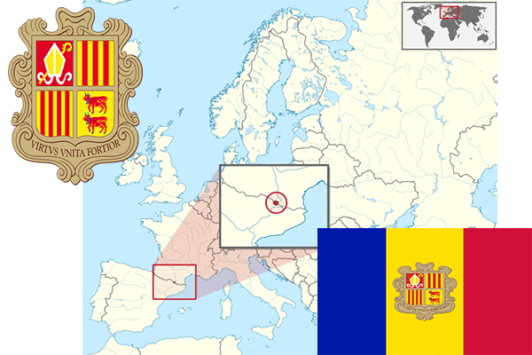

To`liq nomi: Andorra Qirolligi
Region: Yevropaning janubi-g‘arbi
Qonunchilik shakli: Parlamentar qirollik
Poytaxti: Andorra-la-Velya
Maydoni: 468 km² (dunyoda 178 -o`rinda )
Chegaradosh davlatlari: Fransiya, Ispaniya
Aholisi: 85 470 (dunyoda 207 -o`rinda ) 2014 roʻyxat
Aholi zichligi: 182,6/km²
Aholining o`rtacha yoshi: 82,75 yil ( 85,10 ayollar, 80,4 erkaklar)
Rasmiy tili: Katalan tili
Dini: Katolik
Pul birligi: Yevro (EUR)
Telefon prefiksi: +376
Internet domen: .ad
Xalqaro tashkilotlarga a`zoligi: BMT (1993 yil)
YIM: Butun: $ 4,90 milliard, Jon boshiga: $ 44,623 (2009- yil roʻyxati)
Yirik shaharlari: Andorra-la-Velya